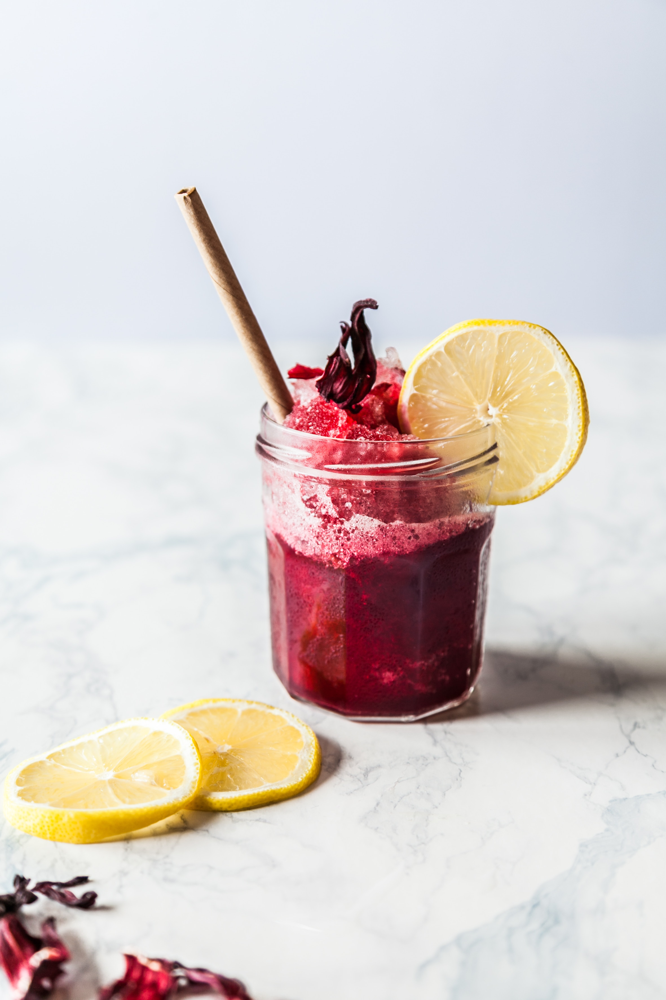
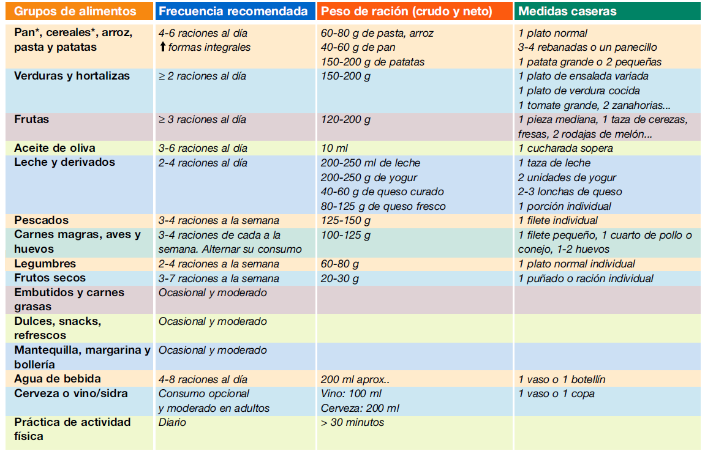

¿Qué es la dieta? Entendemos este término como el conjunto de sustancias alimentarias que se ingieren formando hábitos nutricionales y formando parte de nuestro estilo de vida. En este sentido, la dieta no tiene por qué tener como objetivo perder peso. Aunque muchas veces se relaciona el hecho de estar a dieta con la voluntad de adelgazar, lo cierto es que la dieta se refiere a los alimentos que se ingieren y a los hábitos alimenticios que se adquieren. Sin embargo, la dieta sí que puede modificarse según el objetivo que queramos conseguir: perder o aumentar peso, combatir alguna enfermedad o molestia (anemia, colesterol...) o incluso mejorar nuestro rendimiento deportivo.
Lo ideal es aumentar el consumo de alimentos frescos como frutas y verduras; acompañándolos con proteínas magras: carne y pollo, retirando la grasa visible incluso antes de cocinar, ej.: la piel del pollo. Es importante aumentar el consumo de pescado y preparaciones con claras de huevo como omelettes, ej.: omelettes de verduras utilizando solo claras o 1 yema y 2-3 claras, quesos descremados (recordar que cuanto más duro es el queso, más grasa y sodio tiene) y budines. Hacer una buena selección de hidratos de carbono; elegir cereales integrales, legumbres, avena, frutas y evitar el consumo de harinas refinadas o blancas y de las carbograsas; galletitas, bizcochos, medialunas, masas de pizza y empanadas, tartas, pastas rellenas, rebozados (en especial fuera de tu casa) y prefritos. Así también, debemos disminuir consumo de alcohol, bebidas azucaradas y grasas malas como manteca, crema, achuras. Las grasas de buena calidad como frutos secos (almendras, nueces, etc.) es bueno incorporarlas, teniendo en cuenta de no excedernos en cantidad, por su valor calórico.
Esta tabla de alimentos con su información nutricional te ayudará a preparar una dieta equilibrada y saludable. La información nutricional de un alimento es el conjunto de los valores energéticos (valores nutricionales) de cada uno de los nutrientes que lo componen: grasas, proteínas, carbohidratos, sales minerales, vitaminas y fibra.Contiene una lista con la composición de los alimentos más importantes, sus calorías, carbohidratos, proteínas, grasas y fibra.  Puedes usarla para ver los nutrientes que deseas evitar así como para encontrar los más adecuados para tu dieta. Cuando accedas a esta guía verás, para cada alimento (representado por una porción de 100 gramos), unos valores. En el caso de las calorías, el número total, y en el caso de las grasas, proteínas, carbohidratos y fibra, los gramos de cada una en esa porción de 100 gramos de alimento
El valor nutricional de los alimentos está relacionado con el contenido energético de los nutrientes. Se refiere siempre para una cantidad de 100 gramos ó 100 ml del alimento. Ver más en Tabla de Alimentos e Información nutricional
Los nutrientes son fundamentalmente los carbohidratos, proteínas, grasas, fibra, vitaminas y minerales estos los puedes conseguirlos fácilmente en el supermercado. Se trata de comprar alimentos ricos en vitaminas, minerales y otros oligoelementos en cantidades suficientes que harán prescindible que debas tomar además suplementos dietéticos o vitaminínicos.
Una buena idea es incorporar a nuestros desayunos y meriendas los llamados licuados detox, con frutas y verduras de color verde, preferentemente. Ej.: pera y espinaca o ananá, pepino, limón y jengibre. También podrían ser licuados con remolacha, zanahoria y naranja. Además, podríamos probar panqueques hechos con claras de huevo, mezclados con un poco de avena instanatánea o salvado de trigo y trocitos de frutilla.
 En los almuerzos y cenas, debemos disminuir o evitar las harinas blancas o refinadas; y aumentar el consumo de proteínas magras y verduras y frutas. Que nuestro plato siempre tenga color. Si nuestros platos son por lo general sin mucho color, ej.: carne con papas o arroz; empanadas, pizza, pastas, estamos perdidas desde el punto de vista nutricional.
Otro dato a tener muy en cuenta es no dejar pasar más de 4 horas sin comer, para evitar llegar a la próxima comida muertas de hambre y ahí probablemente nuestro cuerpo nos pida dulces y harinas en vez de alimentos saludables.
Es importante planificar nuestro día alimentario, para evitar caer en las masas, la empanada, la tartita comprada afuera, que aunque se llame "tarta light", probablemente el relleno tenga mucha grasa y calorías escondidas.
Es fundamental aumentar consumo de agua durante el día. Debemos arrancar y terminar el día ingiriendo agua. A los que les cuesta consumir agua, podemos reemplazarlas por aguas saborizadas realizadas por nosotros, ej.: agua con rodajitas de limón o/y naranja/pomelo, pepino y jengibre. Tenemos que volver a lo natural, y disminuir el consumo de jugos comerciales y gaseosas, aun las light, que aunque no tienen calorías, tienen mucho sodio y además estimulan las ganas de comer dulce luego.
En los almuerzos y cenas, debemos disminuir o evitar las harinas blancas o refinadas; y aumentar el consumo de proteínas magras y verduras y frutas. Que nuestro plato siempre tenga color. Si nuestros platos son por lo general sin mucho color, ej.: carne con papas o arroz; empanadas, pizza, pastas, estamos perdidas desde el punto de vista nutricional.
Otro dato a tener muy en cuenta es no dejar pasar más de 4 horas sin comer, para evitar llegar a la próxima comida muertas de hambre y ahí probablemente nuestro cuerpo nos pida dulces y harinas en vez de alimentos saludables.
Es importante planificar nuestro día alimentario, para evitar caer en las masas, la empanada, la tartita comprada afuera, que aunque se llame "tarta light", probablemente el relleno tenga mucha grasa y calorías escondidas.
Es fundamental aumentar consumo de agua durante el día. Debemos arrancar y terminar el día ingiriendo agua. A los que les cuesta consumir agua, podemos reemplazarlas por aguas saborizadas realizadas por nosotros, ej.: agua con rodajitas de limón o/y naranja/pomelo, pepino y jengibre. Tenemos que volver a lo natural, y disminuir el consumo de jugos comerciales y gaseosas, aun las light, que aunque no tienen calorías, tienen mucho sodio y además estimulan las ganas de comer dulce luego.